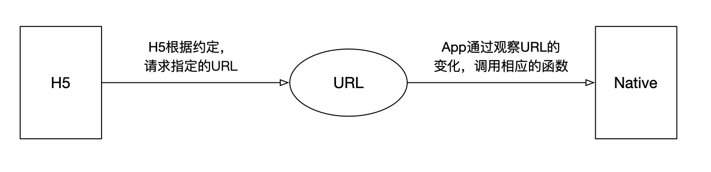

作用域
函数的作用域在函数定义的时候就被定义了
函数的内部有一个[[scope]]属性，当函数创建时，就会保存所有父变量对象到 = 你可以理解 [[scope]] 就是所有父变量对象的层级链
1 |
|
1 | var scope = 'global scope' |
作用域链
当查找变量时，会从当前上下文中的变量对象中查找，如果找不到就会从父级的执行上下文的变量对象中查找，这样由多个执行上下文中的变量对象构成的链表就叫作用域链
函数的作用域在函数定义的时候就被定义了
函数的内部有一个[[scope]]属性，当函数创建时，就会保存所有父变量对象到 = 你可以理解 [[scope]] 就是所有父变量对象的层级链
1 |
|
1 | var scope = 'global scope' |
当查找变量时，会从当前上下文中的变量对象中查找，如果找不到就会从父级的执行上下文的变量对象中查找，这样由多个执行上下文中的变量对象构成的链表就叫作用域链
在JavaScript中有三种代码运行环境
js 代码被执行的时候进入不同的执行环境，这些执行环就构成了执行环境栈（Execution context stack，ECS）

对于每个Execution Context都有三个重要的属性，变量对象（Variable object，VO），作用域链（Scope chain）和this
VO(variable object):变量对象， 包含当前执行环境的变量 (var, Variable Declaration)， 函数声明 (Function Declaration, FD)， 函数的形参
1
2
3
4
5
function VariableObject() {
this.variableDeclaration = {} // 变量声明
this.functionDeclatration = {} // 函数声明
this.functionArguments = {} // 函数的形参
}
VO: 对象中不包含函数表达式和没有使用var声明的变量
作用域
this属性
活动对象（Activation object）
在函数上下文执行中， vo是不能直接访问的， 此时由激活的对象AO扮演vo角色，激活对象进入函数上下文时被创建， 它是通过函数的arguments属性
Arguments Object对象包含：
执行环境的创建分为创建阶段和激活/代码执行阶段
创建阶段（当函数被调用，但是开始执行函数内部代码之前）
激活/代码执行阶段
创建VO/AO
根据函数的参数，创建并初始化arguments object
扫描函数内部代码，查找函数声明（Function declaration）
a. 对于所有找到的函数声明，将函数名和函数引用存入VO/AO中
b. 如果VO/AO中已经有同名的函数，那么就进行覆盖
扫描函数内部代码，查找变量声明（Variable declaration）
// 创建执行环境
function CreateExecutionContext() {
this.status = 'created'
if (this.status === 'created') {
CreatedScopeChin() // 创建作用域连
VariableObject() // 创建VO或者AO对象
SetCurrentThisValue() // 设置当前this的值
}
}
function demoExecutionContext(param1, param2) {
function demo() {
console.log('测试')
}
var demo = 'created'
var a = '测试'
}
demoExecutionContext('ryfrgyfrgyfr', '参数以')
// 创阶段
demoExecutionContextCreated{
scopeChain: {},
VO: {
arguments: {
0: ' ryfrgyfrgyfr ',
1: '参数以'
},
param1: ' ryfrgyfrgyfr',
param2: '参数以',
demo: point to function demo(){.....},
a: undefined
},
}
// 执阶段
demoExecutionContextExe{
scopeChain: {},
VO: {
arguments: {
0: ' ryfrgyfrgyfr ',
1: '参数以'
},
param1: ' ryfrgyfrgyfr',
param2: '参数以',
demo: 'created',
a: '测试'
},
}
`this可以叫做上下文对象, 也就是用来指明执行上下文是在那个上下文中被触发的对象
1 | (function () { |
先看看 箭头函数通过babel转码为es5是什么样的….
1 |
|
所以通过上面可以看出： 箭头函数的this指向当前箭头函数所在的上下文中
1 |
|
1 | /** |
1 | /** |

将父类的实例作为子类的原型
1 |
|
优点：
父类方法可以复用
缺点：
1, 父类的引用属性会被所有子类实例共享
2, 子类构建父类实例时不能向父类传递参数
将父类构造函数的内容复制给子类的构造函数
1 |
|
优点：
父类的方法可以被复用
避免了引用类型的属性被所有实例共享
子类构建实例时可以想父类传递参数
缺点：
每次创建实例都会创建一遍方法。
1 |
|
优点： 融合原型链继承和构造函数的优点，是 JavaScript 中最常用的继承模式。
缺点： 组合继承最大的缺点是会调用两次父构造函数。
就是 ES5 Object.create 的模拟实现，将传入的对象作为创建的对象的原型。
1 |
|
创建一个仅用于封装继承过程的函数，该函数在内部以某种形式来做增强对象，最后返回对象
1 |
|
1 |
|
优点： 保持原型链不变，正常使用instanceof 和 isPrototypeOf
每个函数都有一个prototype属性
1 |
|
函数的prototype属性指向一个对象，该对象指向创建构造函数实例的原型, 该对象中包含指向构造函数的执政constructor和原型proto属性
在上述例子中：
1 | p1.__proto__ === Person.prototype // true |
每个对象(除null以外)都有proto属性, 该属性会指向该对象的原型
总结：proto 、 prototype、 constructor三者之间的关系：
prototype: 函数才有，指向该构造函数创建的实例的原型
proto: 每个对象都有, 指向构造函数的原型
constructor: 指向关联的构造函数
当读取实例的属性时，如果找不到就会到与对象的原型中去查找
1 |
|
在通讯双方都创建好 RTCPeerConnection 对象后，它们就可以开始进行媒体协商了。
不过在进行媒体协商之前，有两个重要的概念，即 Offer 与 Answer ，你必须要弄清楚。Offer 与 Answer 是什么呢？对于 1 对 1 通信的双方来说，我们称首先发送媒体协商消息的一方为呼叫方，而另一方则为被呼叫方。
Offer，在双方通讯时，呼叫方发送的 SDP 消息称为 Offer。
Answer，在双方通讯时，被呼叫方发送的 SDP 消息称为 Answer
1 | class RTC { |
ArrayBuffer: 表示通用的、固定长度的二进制数据缓冲区(实例化之后才能存在内存中)
ArrayBufferView: 表示不同类型的Array的描述
blob: js的大型二进制对象类型
1 | /** |
1 |
|
uiwebview和wkwebview能够拦截h5内发起的网络请求； 在h5内发起约好的特定协议的网络请求带上需要传递給ios的参数, 客户端拦截到指定协议请求后解析url上的参数
网络拦截
native想webview中注入全局变量并挂载到window上
1 |
|
1 |
|